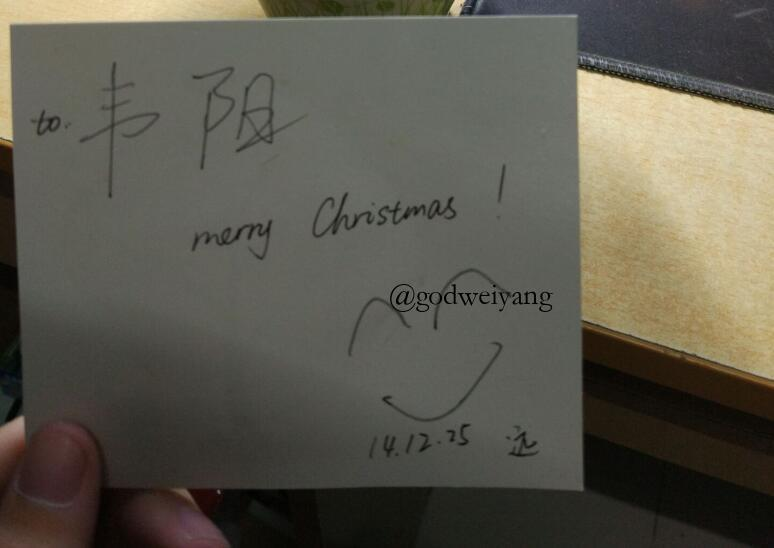
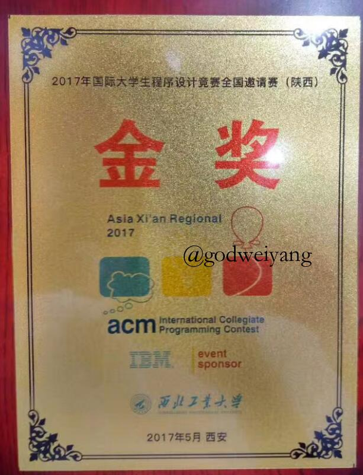
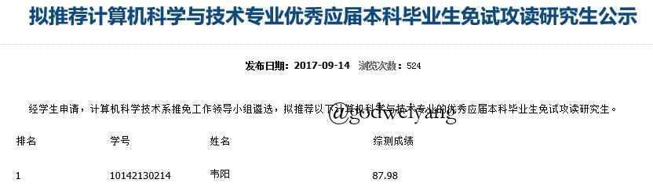

二零一七年终总结
时间过得很快，终于等到放寒假了，虽然这几个月没有课，天天和放假也没啥区别呢。细数一下，还有5个月就要毕业了吧，大一刚入学的场景却依然清楚地记得，转眼间就成了老学长了呢。闲来无事，随便写写，有感而发，无病呻吟而已。
2017
回顾我的2017，没做什么事，令我能记得就3件大事吧：
- 失恋ing
- ACM退役
- 顺利保研
第一件事就不想过多回忆了，2014.12.13 ~ 2017.03.01，曲终人散。

最后引用《我的少女时代》里的一句话吧。
每人都有一颗林真心，遇见是最美好的小幸运，谢谢你出现在我的青春里。
第二件事其实也是黯淡退出吧，大三下开始课程繁忙，也就没怎么训练了，再加上暑假考驾照，于是乎就退役了。回顾三年来，从大一入学时电脑都没怎么碰过的小白，到现在算法也略有所知，也是付出过很大的努力吧，毕竟当年每天刷题，为了一个bug而熬夜到凌晨。最后也算是混了个水水的金牌，奖项不算耀眼。但最重要的是从这段经历中，学到了拼搏、坚持的一种精神，这对以后的研究生涯想必也有很大帮助。

第三件事也是意料之中吧，没有什么波折。纠结了很多，虽然专业第一，但是最后还是选择保了本校。要问原因，也许是校园情怀，也许是导师人很好，也许是为了方便更早研究，也许就是懒吧。现在尘埃落定，靠人靠天不如靠自己，继续努力吧。

过去的一年，学业未有很大长进，看着同学们整页的4.0绩点，心里倒也没有什么不平衡了。下学期保了研之后选了一门研究生的文本挖掘课，也马马虎虎读了几十篇论文，也算是对自然语言处理和深度学习入了个门，最后的presentation做的还算满意。
2018
今年最重要的大事莫过于毕业论文了，因为以后要做的方向是句法分析，所以导师给我的毕业论文安排的就是《基于循环神经网络的成分句法分析》。虽然说是基于ACL2013的一篇论文改编的，但是目前为止，我还没有发现有人做和这个完全一样的。也许最后写的好的话可以直接发paper了。
但是目前基本的框架还没完全搭建起来吧，代码还不是很熟练，现在只写了一个最基础的动态规划+RNN。最近有如下计划：
- 准备试一下动态规划+LSTM。
- 然后动态规划扩增一个维度，用来保存左右结点的head结点。
- 如果这个写好了，就可以和我github找到的PCFG+CYK代码融合了，准备加上每个结点的POS。
- 最后加入预训练词向量应该就基本完成了。
希望能顺利毕业吧，前一段时间一直对一些实现细节有些困惑，代码还写错了，还以为理论错了。也不知道最后出来的结果会怎么样，希望能不错。
生活方面，最近半年越来越懒了，极少出门，睡得晚，起的也晚。最近买了把尤克里里，也算是陶冶陶冶情操吧，不至于一直盯着电脑。现在也小有长进，能弹一点点了。
现在能聊天的人越来越少了，QQ微信放那一天也不一定会有人来找，就算有人也多半是咨询问题的，等一个可以交心的人吧。有时我也想过，我是不是太像中央空调了，对所有人都这么有耐心，到头来却还是一个人，付出那么多最后还是一无所有。
最后还是祝自己2018年顺利吧，希望毕业顺利，研究生涯小有收获，最后等一个有缘人吧。
我遇见谁，会有怎样的对白。
我等的人，她在多远的未来。
转载请注明来源，欢迎对文章中的引用来源进行考证，欢迎指出任何有错误或不够清晰的表达。可以在下面评论区评论，也可以邮件至 jaytp@qq.com
文章标题:二零一七年终总结
本文作者:雪落寒
发布时间:2018-01-22, 12:32:09
最后更新:2019-09-26, 13:13:10
原始链接:https://godweiyang.com/2018/01/22/2017-conclusion/版权声明: "署名-非商用-相同方式共享 4.0" 转载请保留原文链接及作者。